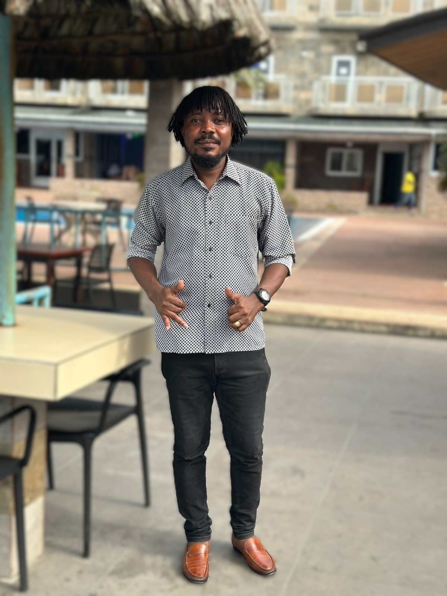

I'm Kwi Kollie born of the union of Mr. & Mrs. Kollie married with six children. I'm married to Mabel F.B. Kollie with a son. I lived at Syaon Town, Bushrod Island Monrovia, Liberia. I graduated from the St. Edward Catholic High School, a diploma in computer Hardware from QUALIC Computer School and a certificate from DEON NOED INTERNATIONAL(DNI) in FRAUD, ANTI-MONEY LAUNDERING, RISK MANANMEMENT AND HOW TO CONDUCT EFFECTIVE INVERTIGATIONS. Work with Brac Liberia microfinance Company ltd as a Sir IT officer which will soon be change to Manager, IT Service. I was awarded as one of the most dedicated and longer severing staff in March 2023. I'm an IT Officer, specialized in computer hardware, Basic knowledge in SQL Server Management Studio 20, Windows and Microsoft office suite, T24 (Temenos customized MF Banking Applications) Service Desk (Stander way of reporting issues to IT for solutions) Employee or customer's support.
